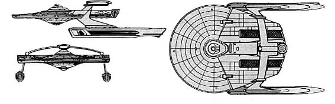

Souyz-class Research Cruiser (UFP)

Battle Stats
Engines and Superstructure
Total Power Units - 48 (Warp Drive - 2x20, Impulse - 8)
MPR - 4/1
Superstructure - 22
Maximum Warp - 2
Industry Points to Build - 4
Beam Weapons (Phasers)
Max Power - 7
Firing Chart - W
Arcs - 2f/p, 2f/s
Bonuses - +3(1-10) +2(11-17) +1(18-20)
Missile Weapons (Photon Torpedoes)
Power to Arm - 1
Damage - 20
Firing Chart - S
Arcs - 1F, 1A
Deflector Shields
Max Shield Power - 14
SPR - 1/3